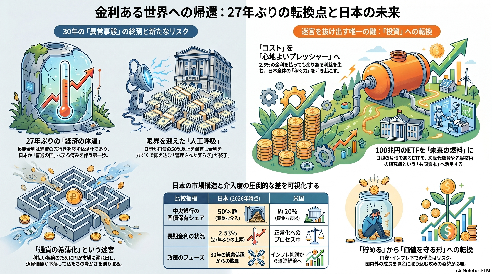

27年ぶりの「金利正常化」がもたらす未来の全体像

日銀による「人工呼吸」の限界
長期金利は「経済の体温計」です。27年ぶりに2.53%を記録したことは、金利を力ずくで抑え込む「管理された安らぎ」が終わり、日本が普通の国へ戻る痛みを伴う第一歩であることを示しています。
利払い補填のために市場に円が溢れ出し、通貨価値が下落するリスクを警告しています。これは私たちの生活の豊かさを実質的に削り取る目に見えない脅威です。
「コスト」を「心地よいプレッシャー」へ
2.5%の金利コストを払ってでも余りある利益を生む、日本全体の「稼ぐ力」を叩き起こす必要があります。溜め込まれた資産を攻めの武器へと変えるパラダイムシフトが求められます。
インフレ下での「ただ預ける」ことはリスクです。円安・インフレの波から資産を守るため、国内外の成長を自らの資産に取り込む姿勢への転換が急務です。
日本の中央銀行による国債保有シェアは 50%超
米国の約20%と比較しても、現在の日本の市場がいかに異例な介入度にあるかが可視化されています。